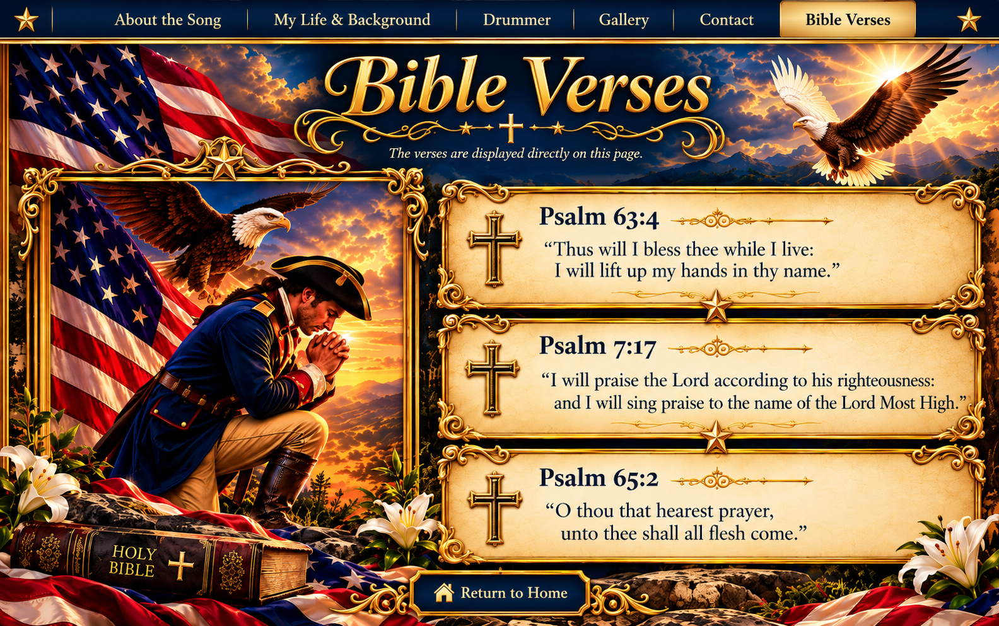

Bible Verses
Psalm 63:4
Thus will I bless thee while I live: I will lift up my hands in thy name.
Psalm 7:17
I will praise the Lord according to his righteousness: and I will sing praise to the name of the Lord Most High.
Psalm 65:2
O thou that hearest prayer, unto thee shall all flesh come.